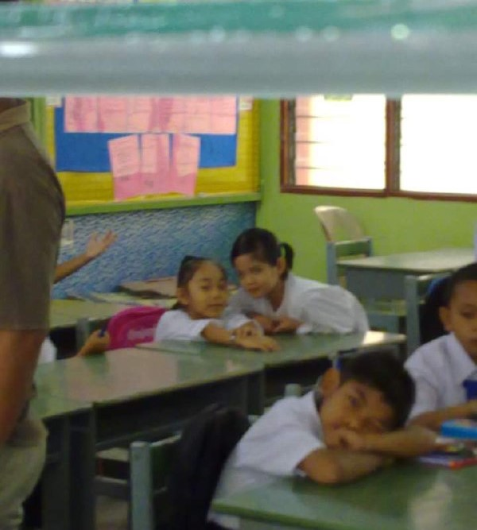
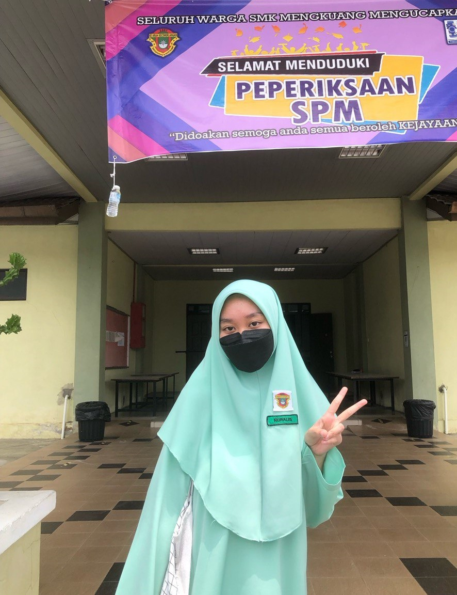
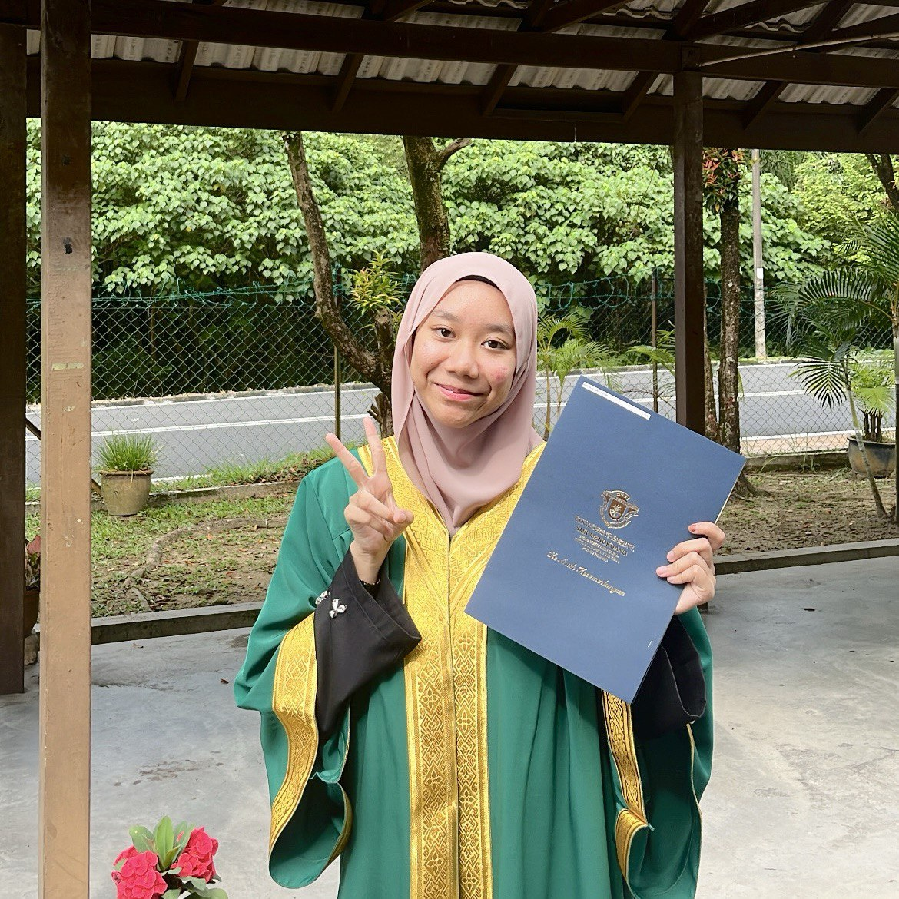
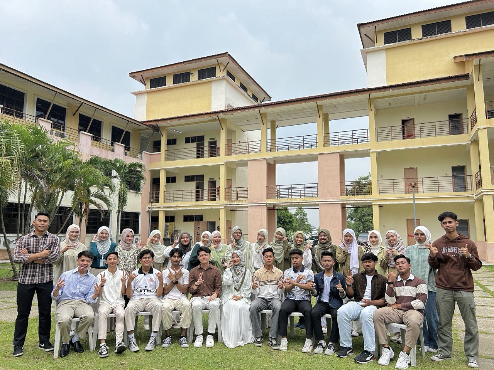

chronicleshe
chronicleshe
I began my educational journey at Tuanku Bainun Campus Kindergarten, where I first embraced the fundamentals of reading, writing, and developing social skills. It was there that I received the Outstanding Student Award during graduation, marking the first significant milestone in my academic path. I am grateful for the strong foundation this experience provided and happy to have started my journey in such a nurturing environment.
I completed my elementary school years with an honors award, earning the Best Student accolade in the Malay language subject in grade 6. This photograph captures a memorable moment from my first day of school, marking the beginning of a journey that would shape my academic achievements.
I graduated from Sekolah Menengah Kebangsaan Mengkuang in 2022 with excellent grades, achieving 6As in the SPM despite the challenges posed by the Covid-19 pandemic. Although the pandemic disrupted the learning process, I remained determined and resilient, making this achievement a significant turning point in my educational journey.
 I am currently pursuing a diploma in Information Management at Universiti Teknologi MARA, now in my final year, with plans to graduate next year. I aspire to complete this journey with outstanding results, reflecting my dedication and hard work. This experience has been a significant milestone, greatly enriching my technical knowledge and skills.
Your commitment to learning has illuminated countless opportunities ahead.